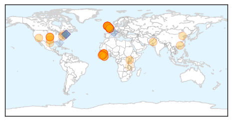
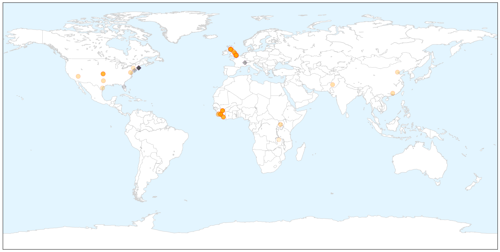

Ebola
30-Day Web Trend
2 alerts, 0 warnings

30-Day Twitter Trend
2 alerts, 0 warnings

Article Locations

X

Article Confidences

Top Articles:
- 1.000
- Ebola virus can linger in semen of survivors for 9 months, study shows
- 1.000
- Ebola after-effects unclear as nurse becomes critically ill
- 1.000
- Ebola nurse Pauline Cafferkey is critically ill
- 1.000
- Ebola found in the semen of some men nine months later
- 1.000
- Ebola Lingers in Semen for Months, Studies Confirm
- 1.000
- Response in Sierra Leone to Ebola Outbreak Saved 40,000 Lives: Study
- 1.000
- Ebola nurse Pauline Cafferkey's rapid decline after being 'cured' leaves experts staggered
- 1.000
- Ebola Virus: Scottish Nurse Pauline Cafferkey 'Critically Ill'
- 1.000
- How Does Ebola Come Back?
- 1.000
- Ebola Beds Prevented 40,000 Deaths
- 0.999
- British Nurse Pauline Cafferkey Now 'Critically Ill' After Her Ebola Relapse Worsens
- 0.999
- U.S. still vulnerable a year after Ebola outbreak, doctors say
- 0.999
- Ebola survivors can carry virus in their sperm ‘for nine months’
- 0.999
- Ebola nurse Pauline Cafferkey now critically ill
- 0.999
- Delivery Of 3,000 Ebola Treatment Beds Prevented 40,000 Deaths In Sierra Leone
- 0.999
- Ebola May Stay in Survivors' Semen for Many Months
- 0.999
- British Ebola nurse now 'critically ill'
- 0.999
- Johnson & Johnson Announces Start of Clinical Trial of Ebola Vaccine Regimen …
- 0.999
- UK's first Ebola patient 'critically ill,' in isolation
- 0.999
- British Ebola nurse Pauline Cafferkey 'critically ill'
- 0.999
- Does 'reactivated' Ebola pose a threat?
- 0.998
- British Ebola nurse Pauline Cafferkey critically ill
- 0.998
- British Ebola nurse Pauline Cafferkey critically ill
- 0.998
- British Ebola nurse now 'critically ill': hospital
- 0.998
- Ebola nurse Pauline Cafferkey 'critically ill' after condition deteriorates, hospital says
- 0.997
- Ebola experts unsure how many could be hit by return of disease as Pauline Cafferkey's condition deteriorates
- 0.997
- Ebola nurse Pauline Cafferkey in critical condition at London hospital isolation unit
- 0.997
- Ebola, Epic, the New York Times and the Culture of Accountability
- 0.997
- Give Me Liberty
- 0.996
- UK's first Ebola victim readmitted to hospital, deemed 'critically ill'
- 0.996
- Ebola lingers in semen for nine months
- 0.995
- Pauline Cafferkey, Nurse With Ebola Complications, Is 'Critically Ill'
- 0.994
- Ebola-hit nurse 'critically ill' in London hospital
- 0.994
- Ebola-hit nurse 'critically ill' in London hospital
- 0.991
- British Nurse Treated for Ebola Now 'Critically Ill'
- 0.989
- Nurse Pauline Cafferkey critically ill with Ebola relapse
- 0.987
- Nurse shares experience battling Ebola
- 0.984
- Ebola nurse Pauline Cafferkey 'critically ill' after condition deteriorates
- 0.982
- ‘Critically ill': Condition of British nurse thought cured of Ebola downgraded
- 0.982
- Pauline Cafferkey now CRITICALLY ill due to Ebola complications
- 0.981
- Ebola Virus Stays in Semen Months After Recovery
- 0.980
- Scottish nurse critically ill with relapse of Ebola
- 0.980
- clinical trial of preventive Ebola vaccine regimen in Sierra Leone
- 0.978
- UK nurse critically ill after Ebola infection returns
- 0.978
- China To Mass Produce Ebola Vaccine Developed By Chinese Military Scientists
- 0.976
- British Ebola nurse now 'critically ill'
- 0.974
- Ebola nurse now 'critically ill'
- 0.973
- Condition of hospitalized Ebola nurse in UK worsens
- 0.973
- Ebola nurse Pauline Cafferkey now 'critically ill'
- 0.973
- Ebola nurse Pauline Cafferkey now 'critically ill'
Showing top 50 articles...
Top Tweets:
- 0.972
- .@EbolaPhone Dunno if 1 Ebola infection = immunity. Ebola Zaire vaccine isn't cross protective - why would infection be?
- 0.922
- Ebola Virus Detector Performs Well - Science Times http://t.co/WHXchuvLjX ebola EVD
- 0.922
- As of Sunday 11 October no positive Ebola cases were confirmed in West Africa. However high-risk contacts under observation in Guinea.
- 0.856
- Ebola virus decimates wild gorilla population - The Australian http://t.co/IFBPYVXFS5 ebola EVD
- 0.822
- Ebola in Sierra Leone: how worried are people? - BBC News http://t.co/77Ib1IMVvK ebola EVD
- 0.764
- U.S. still vulnerable a year after Ebola outbreak doctors say - Washington Times http://t.co/UNn8yKyprY ebola EVD
- 0.727
- In 3 Ebola affected W. African countries CDC & partners trained >25000 health care workers in infection control http://t.co/GYbXouFzQd
- 0.722
- If we had acted just a month earlier we could have halved the number of Ebola ... - Quartz http://t.co/TXmXYUMJPb ebola EVD
- 0.713
- Scottish Nurse Treated for Ebola Complications in Critically Ill Condition - Newsweek http://t.co/amvm4zeY2Z ebola EVD
- 0.702
- UK Nurse With Ebola Critically Ill Again - WebMD http://t.co/dFKZe4V08e ebola EVD
- 0.677
- Ebola survivors can carry virus in their sperm 'for nine months' - The Guardian http://t.co/9mx8KmPYQN ebola EVD
- 0.675
- UK's first Ebola patient 'critically ill' in isolation - CNN http://t.co/ilIQIJjaqC ebola EVD
- 0.673
- How many other Ebola survivors in West Africa have fallen critically ill or died without public knowledge? Urgent need for investigation.
- 0.672
- New in EID journal: Ebola in West Africa- CDC’s role in epidemic detection control and prevention: http://t.co/DNiLGIy9wj
- 0.659
- Scottish nurse who recovered from Ebola critically ill - USA TODAY http://t.co/N7YAiS35e7 ebola EVD
- 0.652
- Dr. Nancy Snyderman on Ebola scandal: 'People wanted me dead' - Fortune http://t.co/7h7FYd6Wl2 ebola EVD
- 0.639
- In wake of Ebola epidemic Margaret Chan wants countries to put their money ... - Science /AAAS http://t.co/n9ilZr4aiX ebola EVD
- 0.612
- Interesting Ebola research answers some questions raises some others. 1) yes some male survivors have virus in their semen for months 1/n
- 0.589
- Introduction of Ebola treatment beds reduces large number of deaths Ebola ... - http://t.co/A9wAAOLz1c http://t.co/EXIHJL0DUy ebola EVD
- 0.578
- Condition of hospitalized Ebola nurse in UK worsens - AOL News http://t.co/4DitmRbYsL ebola EVD
- 0.568
- Australian Ebola clinic wins award - Yahoo7 News http://t.co/lsi9ZSi1E9 ebola EVD
- 0.561
- China to mass produce Ebola vaccine - Xinhua http://t.co/901vX5xr9B ebola EVD
- 0.550
- We Now Know More About Sexually Transmitted Ebola - TIME http://t.co/Fn8jxTuIgU ebola EVD
- 0.530
- Ebola lingers in semen for nine months - BBC News http://t.co/0P5a4kBSkW ebola EVD
- 0.525
- 'Critically ill': Condition of British nurse thought cured of Ebola downgraded - Washington Post http://t.co/MumHh2XFJ4 ebola EVD
- 0.523
- The only upside of the awful West African Ebola outbreak is much will be learned including this about survivors. https://t.co/YZjTiI2IxK
- 0.521
- Vaccine offers new hope for gorrillas ravaged by ebola - The Times (subscription) http://t.co/kT2Xxa34ZS ebola EVD
- 0.518
- Active Compound Prevents Ebola Virus In Monkeys Now Undergoes Phase 1 ... - Youth Health Magzine http://t.co/7oY4mmxSNX
- 0.512
- .@WHO: will the weekly Ebola update be coming today?
- 0.508
- RT: Ebola continues to challenge clinicians and researchers this week but good news is another 0-case week in W Africa ht…